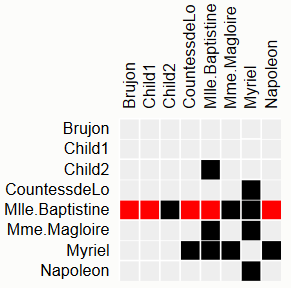
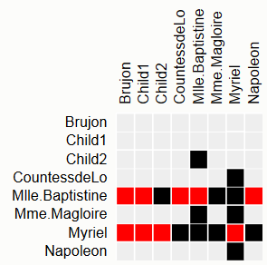

Introduction
In this experiment, we will show you a visual representation of network data and ask you
to answer questions about this data.
The network visualization will be on the left-hand side and the question and
other instructions will be on the right-hand side.
There is a time countdown for each question, and we will hide the visualization once the time is up.
You will have to provide an answer for each question before continuing.
You will be provided with your turk-code after you finish the study.
Try and answer correctly as fast as possible.
Tasks will be based on a matrix visualization of a network data.
How to interpret the matrix visualization for the tasks
Please take some time to review the following information on how to interpret the matrix visualization.
Networks can be represented as square matrices: network nodes are aligned as columns and rows
of the matrix; a black box in a matrix cell means that there is a connection between the
network nodes that correspond to columns and rows of the the two nodes.
For example, in the figure below, the highlighted node/row "Mlle.Baptistine" has three connections to "Child2", "MMe. Magloire", and "Myriel".

Tasks you will be performing for this study
Task1: You will determine if two network nodes are both connected to a common third node.
In other words you will answer the following question: "Is there a column that
has black boxes on both highlighted rows?"
An example of a task instance and answer is shown below.
- Is there a column that
has black boxes on both highlighted rows?

Answer: Yes.
Note: The column "Mme.Magloire" has black boxes on both rows
Task2: You will determine the number of connections of a node. In other
words: "How many black boxes are there on the highlighted row?"
An example of a task instance and answer is shown below.
- How many black boxes are there on the highlighted row?
Answer: 3.